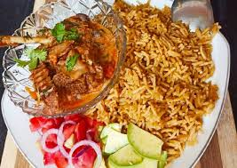

Delicious Pilau

Ingredients
- 2 cups long-grain rice (basmati preferred)
- 1 lb beef, chicken, or goat meat (optional), cubed
- 1 large onion, finely chopped
- 3-4 cloves garlic, minced
- 1 inch ginger, grated or minced
- 2-3 tomatoes, chopped (or 14.5 oz canned)
- 1-2 carrots, diced (optional)
- 1 green bell pepper, diced (optional)
- 1/2 cup green peas (optional)
- 4 cups beef, chicken, or vegetable broth
- 2 tbsp vegetable oil
- 1 tsp cumin seeds
- 1 tsp cardamom pods
- 1/2 tsp cloves
- 1/2 tsp black peppercorns
- 1 cinnamon stick
- Salt to taste
- Fresh cilantro or parsley, chopped (garnish)
Instructions
- Heat oil in a large pot, add cumin seeds, cardamom, cloves, peppercorns, cinnamon. Cook 1 min.
- Add onion, cook until golden. Add garlic and ginger, cook 1 min.
- If using meat, add and brown on all sides.
- Add tomatoes, cook until broken down. Add carrots, bell pepper, peas, cook few mins.
- Add rice, stir to coat. Pour in broth, bring to boil, add salt.
- Reduce heat, cover, simmer 20-25 mins until rice is cooked.
- Remove from heat, let rest 10 mins covered. Fluff with fork.
- Garnish with cilantro or parsley. Serve hot.